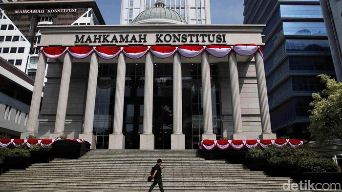
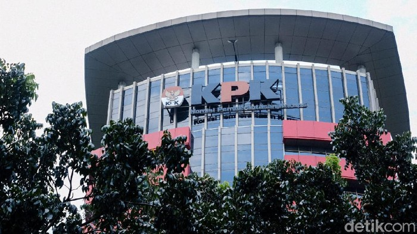
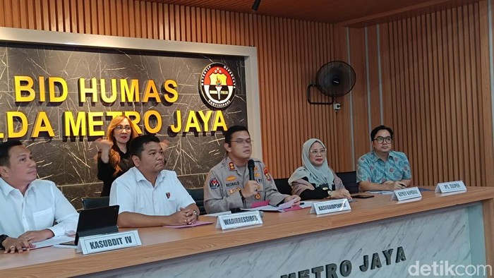

Gugatan UU TNI Tak Diterima MK, Ini Alasannya

Mahkamah Konstitusi (MK) tidak menerima lima gugatan yang diajukan sejumlah pemohon berkaitan dengan pengujian formil dan materiil Undang-Undang Nomor 3 Tahun 2025 Tentang TNI. MK menyatakan para pemohon tidak bisa menunjukkan jelas keterlibatan pemohon dalam proses pembentukan UU TNI itu.
KPK Dalami Proses Pencairan CSR ke Eks Kepala Departemen Komunikasi BI

KPK telah memeriksa eks Kepala Departemen Komunikasi Bank Indonesia (BI), Erwin Haryono. Erwin diperiksa sebagai saksi di kasus dana tanggung jawab sosial (corporate social responsibility/CSR) BI. Jubir KPK, Budi Prasetyo, mengatakan pemeriksaan dilakukan di gedung KPK, Kuningan, Jakarta Selatan, Senin (2/6/2025). Erwin didalami soal proses dari penganggaran hingga pencairan PSBI (program sosial Bank Indonesia)
Polda Metro Tangkap Pembobol Rekening Rp 304 Juta Bermodus APK

Direktorat Siber Polda Metro Jaya menangkap dua orang berinisial EC (28) dan IP (35). Keduanya ditangkap setelah melakukan pembobolan rekening ratusan juta rupiah dengan modus mengirimkan link format APK. "Kami jelaskan bahwa Direktorat Reserse Siber Polda Metro Jaya melakukan pengungkapan kasus tindak pidana illegal access dan/atau memindahkan sistem elektronik milik orang lain tanpa izin. Korban merupakan seorang pensiunan," kata Kasubbid Penmas AKBP Reonald Simanjuntak, Kamis (5/6/2025).